01
Tool Setup & Key Creation
AEScrypt and GPG Suite were installed on macOS. Opening GPG Keychain prompted creation of a new key pair under the lab identity “Bob.” The first passphrase choice was rejected as too weak.
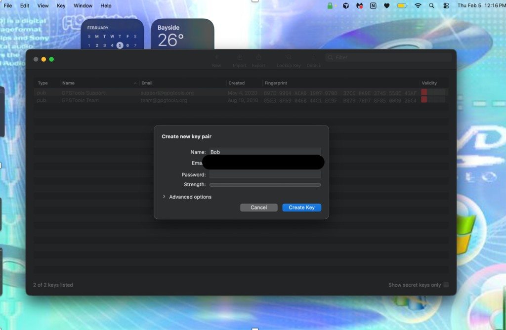
The passphrase was run through CyberChef’s To Base64 operation
(Ilovecyber2026! → SWxvdmVjeWJlcjIwMjYh). That Base64 string was
then used as the private-key passphrase and satisfied the strength meter.
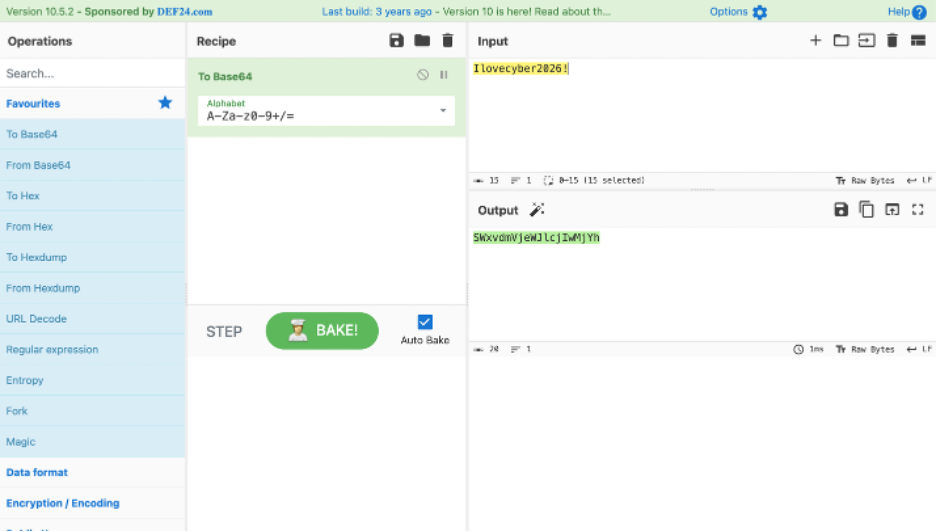
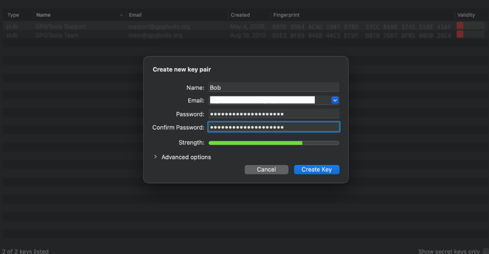
After creation, GPG offered to upload the public key to a key server. That option was declined; the public key would be exchanged by email instead.
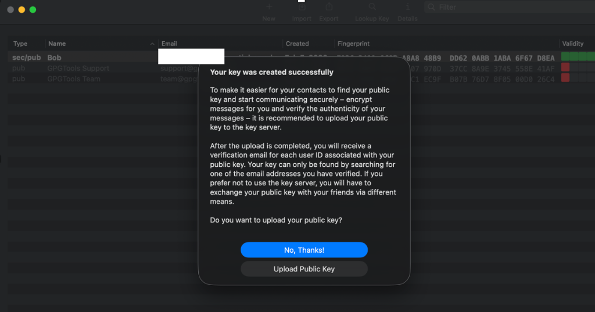
GPG Keychain was granted Full Disk Access so it could integrate with Mail and related data.
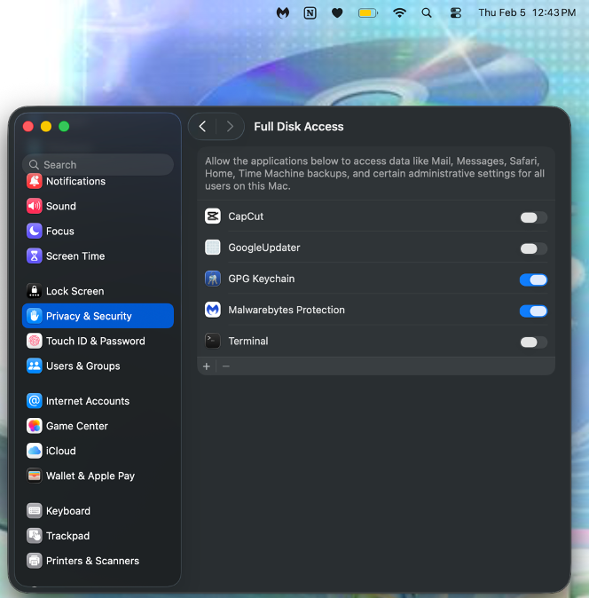
02
GPG Mail Compatibility
Mail encryption did not work with the initially installed GPG Suite build. A newer beta tailored for the current macOS release (GPG Mail for Tahoe) was required before compose-time encrypt/sign controls behaved correctly.
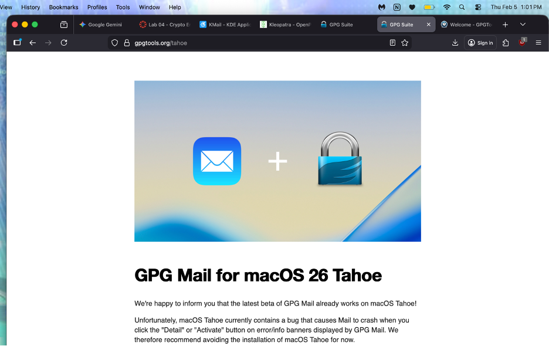
03
AES File Encryption
A photo was encrypted with AEScrypt (passphrase Encryptionsrcool!) to produce
an .aes attachment for the partner.
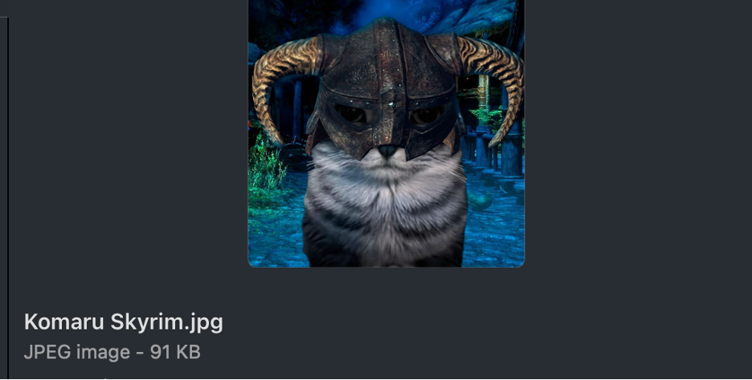
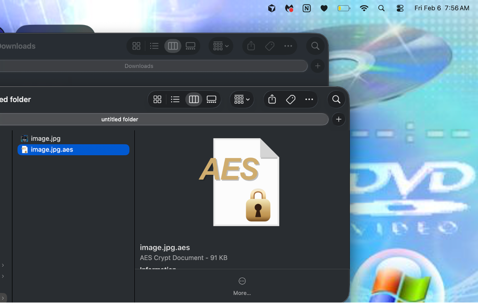
image.jpg.aes.04
Public-Key Exchange
The public key was emailed to the lab partner as an .asc attachment so it could
be imported into their OpenPGP key manager. The message was signed; uploading a private key
was never part of the intended workflow.
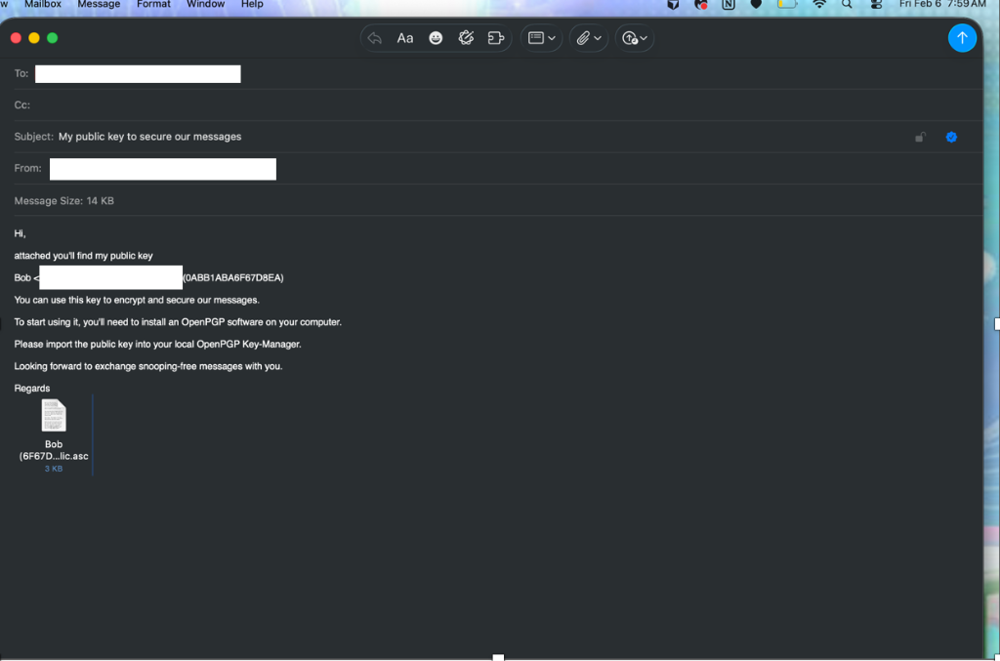
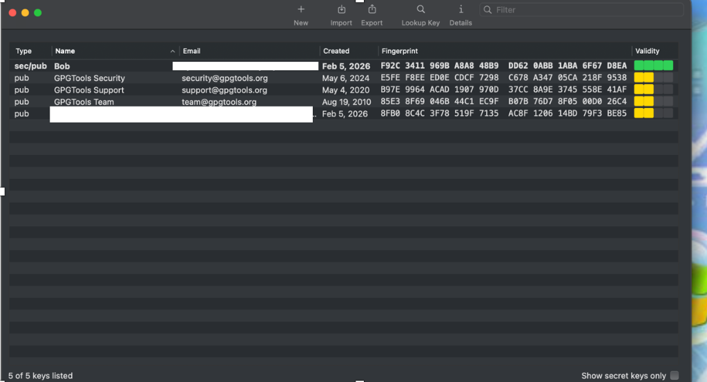
05
Signed & Encrypted Mail
Before a message could show both the encrypt (lock) and sign (checkmark) indicators in Mail, the partner’s public key had to be imported. An early attempt encrypted to the wrong key (own key instead of the partner’s), so the key material was remade and the message was re-encrypted for the partner’s public key, signed with the local private key, and sent with the AES attachment.
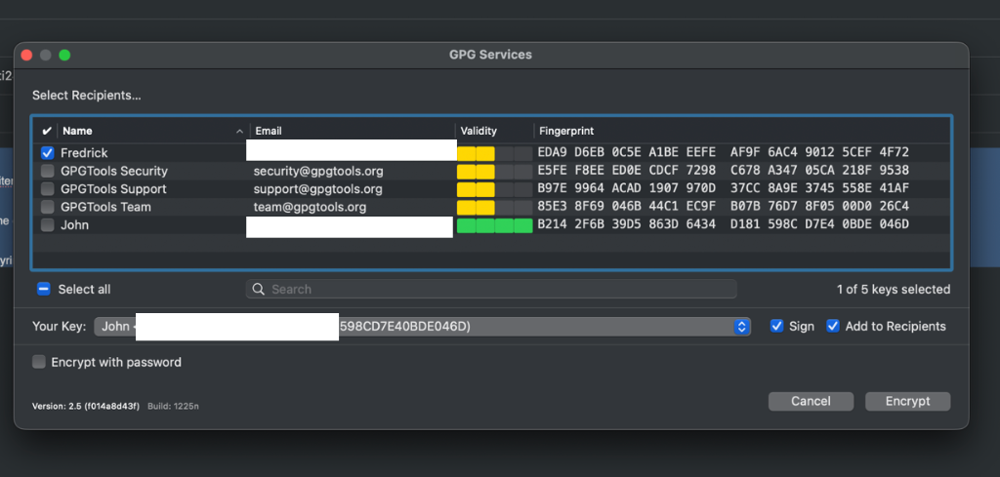
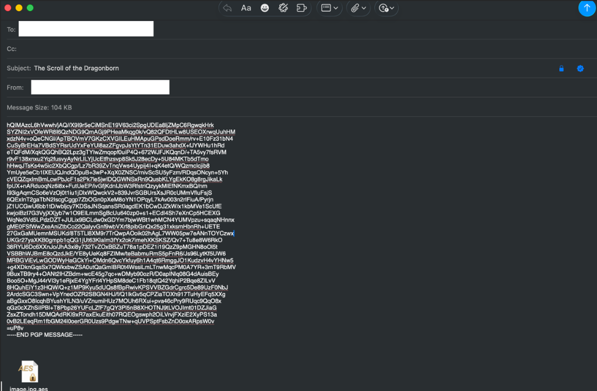
image.jpg.aes.06
Partner Reply & Decryption
The first reply from the partner attached a public key and double-encrypted a text file, but did not encrypt the email body itself. A corrected encrypted message followed.
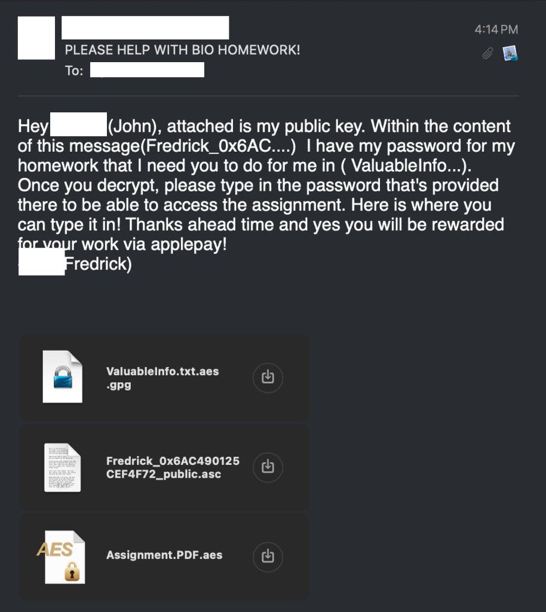
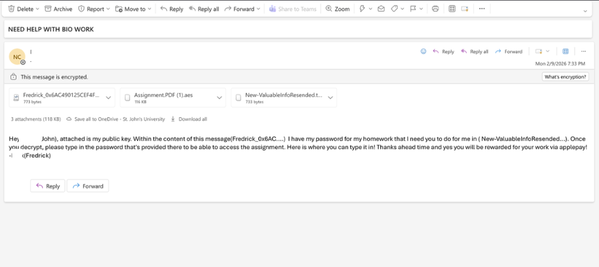
The partner’s text attachment decrypted with the local private key. The assignment PDF
attachment decrypted successfully but initially failed to preview on macOS (Windows/Mac
packaging oddity); renaming the extension to .pdf opened it normally.
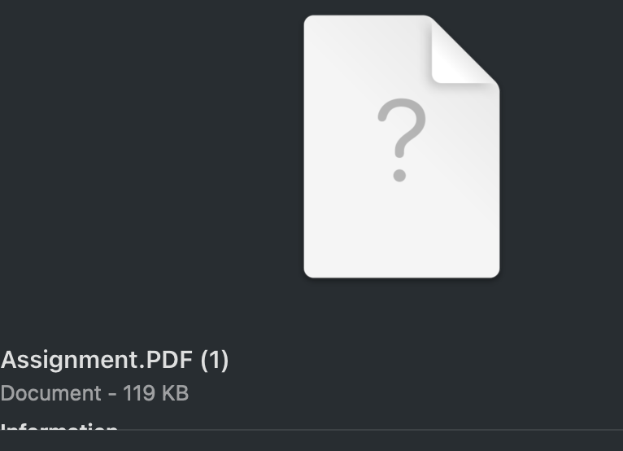
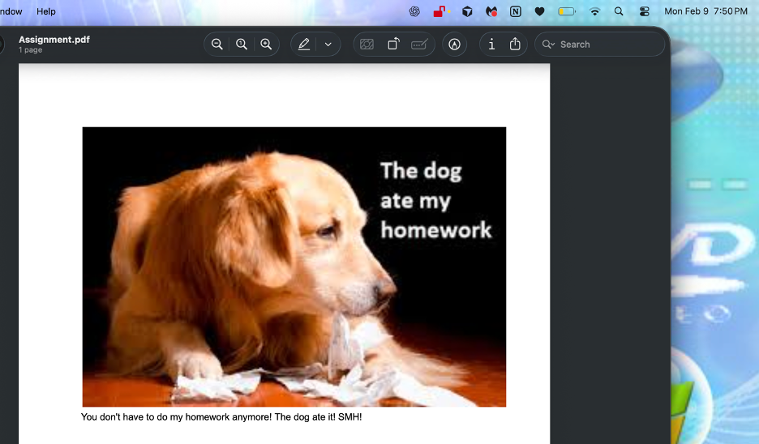
.pdf extension.07
Takeaways
Public keys are what you exchange; private keys stay local. Mail encrypts to the recipient’s public key and signs with your private key—encrypting only to yourself leaves the partner unable to read the message. Layering AEScrypt on an attachment adds a separate symmetric secret that still has to be conveyed out of band or inside a properly encrypted channel. Tooling quirks (macOS Mail integration betas, cross-platform file extensions) showed up as much as the crypto itself.